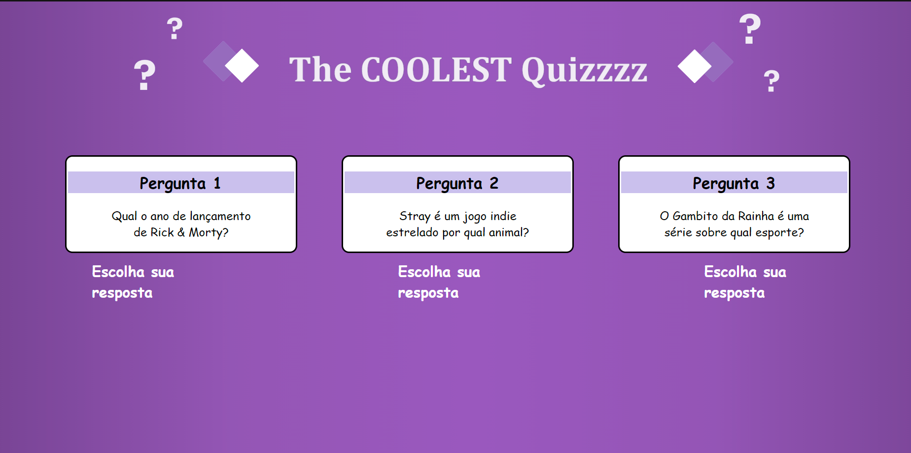
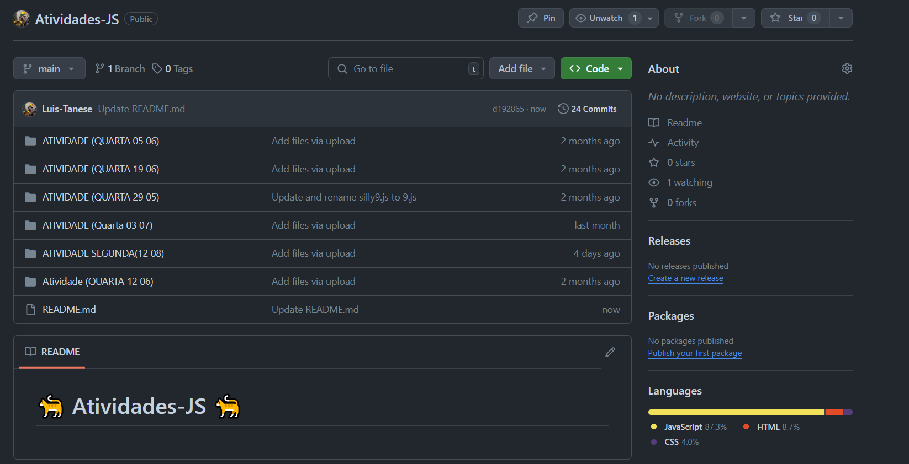

Sobre a atividade: Atividade realizada durante o período de aula, onde tínhamos como objetivo principal refazer um quiz, em formato de site, utilizando do que havíamos aprendido em sala de aula, sendo: HTML e CSS, e assim conseguir ver se realmente nós aprendemos esses contéudos. Honestamente essa atividade foi meio chata e desinteressante pois nosso era apenas copiar o website igual ao dado, mas sem os códigos do original, o que deixou a atividade intediante e chata.
Critérios: H5, H6 e H7
Sobre a atividade: A lista de exercícios de JavaScript também realizada durante o período de aula, foi mais como um treinamento sobre os mesmos conteúdos que havíamos aprendidos na aula do mesmo dia.
Critérios: H1, H2 e H5
